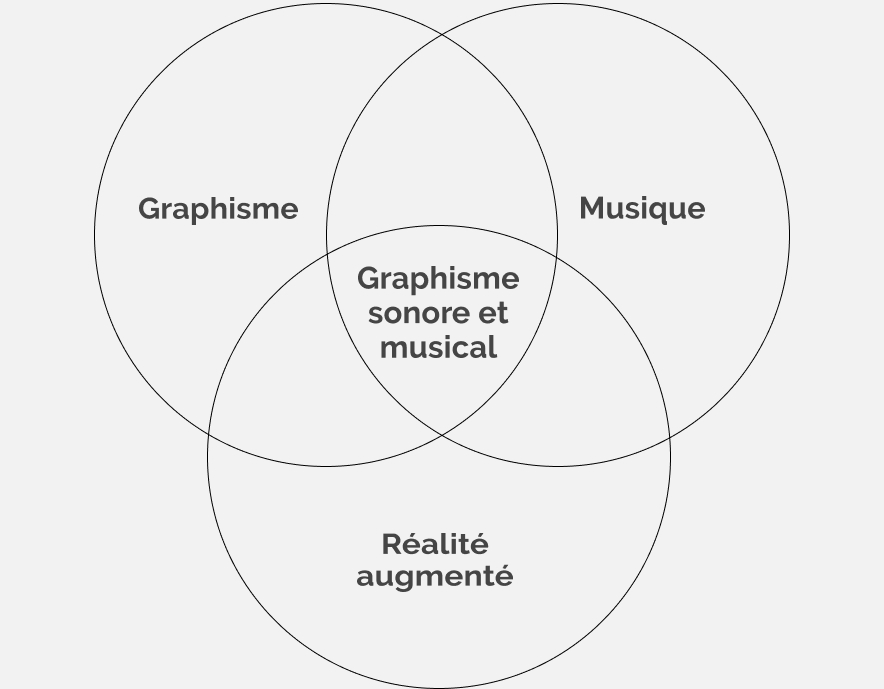
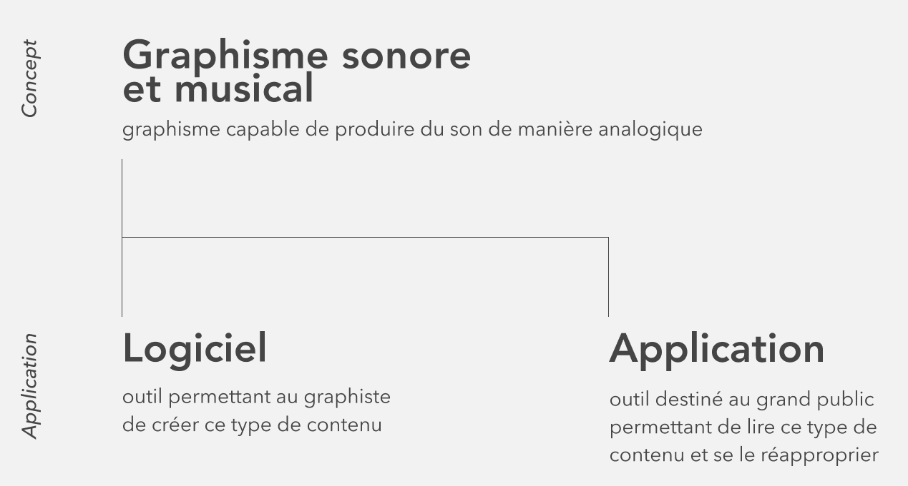
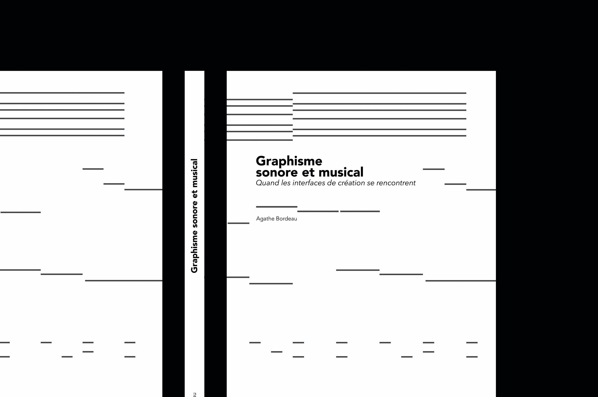
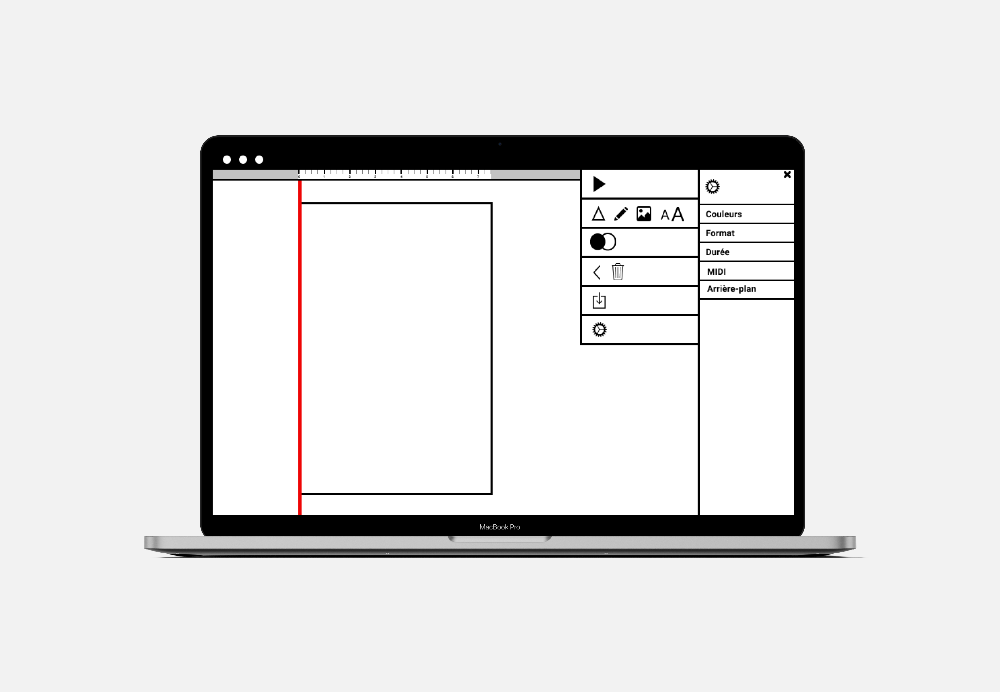
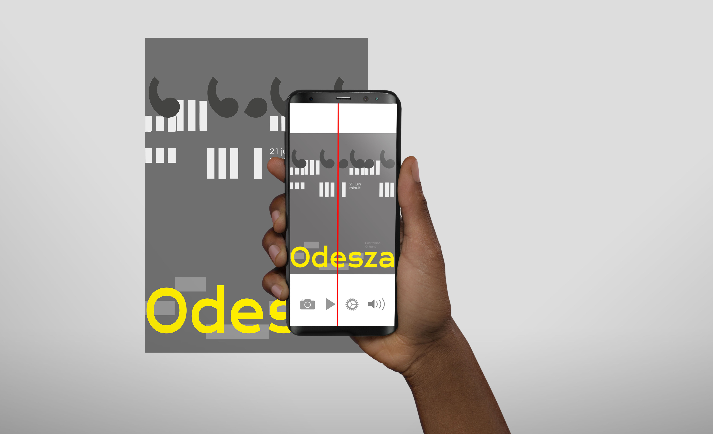

Graphisme
sonore et musical
Le concept de graphisme sonore et musical développé dans le cadre de mon projet
de diplôme à pour ambition d’ouvrir à une nouvelle discipline dans laquelle fusionnent le graphisme,
la musique et la réalité augmentée. Je le défini comme graphisme capable de produire de la musique
dans une relation d’analogie à cette dernière. Le but de cette démarche est de ramener le sensible
de la création et de l’écoute musicale dans le domaine du design graphique à l’aide de la réalité
augmenté sonore.
Pour présenter ce concept, j’ai choisi d’intégrer un deuxième niveau de lecture
à ce site. En appuyant sur le bouton play, l’utilisateur est transporté vers un univers graphique
et sonore issu de mes expérimentations graphiques.
Pour suivre l'évolution de ce projet
rendez-vous à l'adresse suivante : www.agathebordeau.com/graphic-midi
1 Schéma de principe du graphisme sonore et musical
1
Graphisme sonore & musical
Ce projet émerge grâce à un contexte reliant musique et graphisme étudié dans mon mémoire Graphisme sonore et musical : quand les interfaces de créations se rencontrent, c’est pourquoi j’ai fait le choix de le rattacher à la communication dans l’industrie musicale. L'hypothèse est de l'utiliser pour des supports communicants tel que l’identité visuelle d’événements musicaux ou culturels. Il permet de relier le visuel au genre et/ou à l’ambiance musicale de l’événement. C’est pourquoi il m’a semblé nécessaire de développer le projet plastique sur deux niveaux, le premier est lié aux conditions de création tandis que le second aux conditions de réception.
Le parti pris est d’hybrider les outils de P.A.O. et ceux de M.A.O., pour créer un outil et un médium hybride. Le projet prend la forme d’un logiciel de P.A.O. augmenté de la dimension sonore et d’une application pour smartphone qui permettra de lire ce type de graphisme, en créer une réalité augmentée sonore. Ainsi on remet en question et on fait évoluer le graphisme d’aujourd’hui en le rapprochant de la pratique du sound design.
3 Schéma de principe du projet plastique
2 Couverture du mémoire Graphisme sonore et musical : quand les interfaces de créations se rencontrent
2
3
Logiciel
Le logiciel fonctionne de la même manière qu’un logiciel de M.A.O. classique mais il possède des fonctionnalités supplémentaires liées à la correspondance sonore.
En effet le graphisme sonore et musical utilise un principe de scanner, la tête de lecture vient lire les pixels de l’image et les retranscrire en sons. La position Y d’un élément graphique dans la page blanche correspond à la hauteur d’un son, ainsi plus la forme est placée en haut de la page, plus le son produit est aigu et plus elle est placée en bas de la page, plus le son produit est grave. De plus, les couleurs correspondent à des samples différents qui sont eux aussi personnalisables suivant le rendu sonore et graphique souhaité. Ainsi le graphisme n’est pas figé par l’intervention du son, mais il est en action avec ce dernier.
4 Mockup du logiciel
5 Vidéo de principe du logiciel
4
5
Application
L'application a pour but de lire ce nouveau type de médium, ainsi en scannant l’affiche, l’utilisateur pourra savoir de quel genre musical ou de quel groupe ou artiste il s’agit.
Mais le but est d’enrichir l’expérience visuelle par l’expérience audio, comme une extension du graphisme par l’intervention du son.
C'est pourquoi la particularité de ce projet réside dans la suite de l'action, en effet après avoir eu accès à cette information il aura la possibilité de personnaliser à son tour le contenu graphique et sonore et le partager à son tour. Ainsi le spectateur devient acteur de par sa réappropriation du contenu.
6 Vidéo d'utilisation de l'application
7 Mise en situation de l'application
6
7

Réalisé par Agathe Bordeau.
Visitez : agathebordeau.portfoliobox.net
Réalisé en juin 2020 à Orléans
DNSEP - Projet plastique option Communication ESAD Orléans
Design optimisé pour une résolution de 1280 pixels de large.
Textes composés en : Roboto Mono; sans-serif;